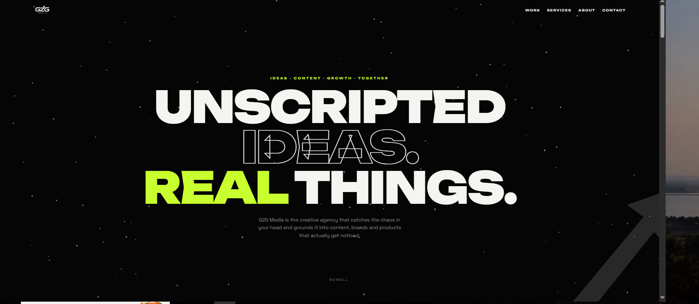
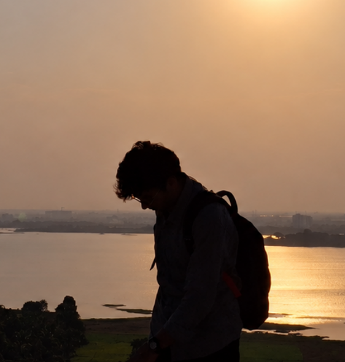

G2GMEDIA / CREATIVE PRACTICE
↗
01 — CREATIVE STUDIOGround to
Ground to
Growth Media.
A creative venture I co-founded, exploring how ideas can grow into thoughtful digital and visual work.
VISIT THE WEBSITE ↗
DESIGN-MINDED. TECH-DRIVEN.
I'm Parth, a student and creative technologist exploring the space between code, AI and visual storytelling. I like making things that feel considered, work beautifully, and leave a little trace.
I’m a student building toward a future in AI engineering, while exploring how design and technology can make useful things feel unforgettable.
Some days that means writing code. Other days it means shaping a cut, finding a visual rhythm, or figuring out why an interface feels right. I’m interested in the overlap.
A growing collection of studio work, digital experiments and things made to learn by doing.

A creative venture I co-founded, exploring how ideas can grow into thoughtful digital and visual work.
VISIT THE WEBSITE ↗ 02 / CREATIVE DIRECTION↗
02 / CREATIVE DIRECTION↗Creative direction · Editing · Visual identity
Part of my creative practice: shaping visuals, editing content and exploring how a brand feels in motion.
Web · Python · AI exploration
Small builds, new tools and technical experiments. The point is to keep learning by making.
Editing, pacing, visual systems and making a message feel clear without making it feel ordinary.
↗Building responsive interfaces and learning how thoughtful motion can make digital experiences feel alive.
↗Exploring Python, AI and the systems behind the tools I want to understand and eventually build.
↗HAVE A GOOD IDEA?
For collaborations, creative projects, or a conversation about the things we're building.